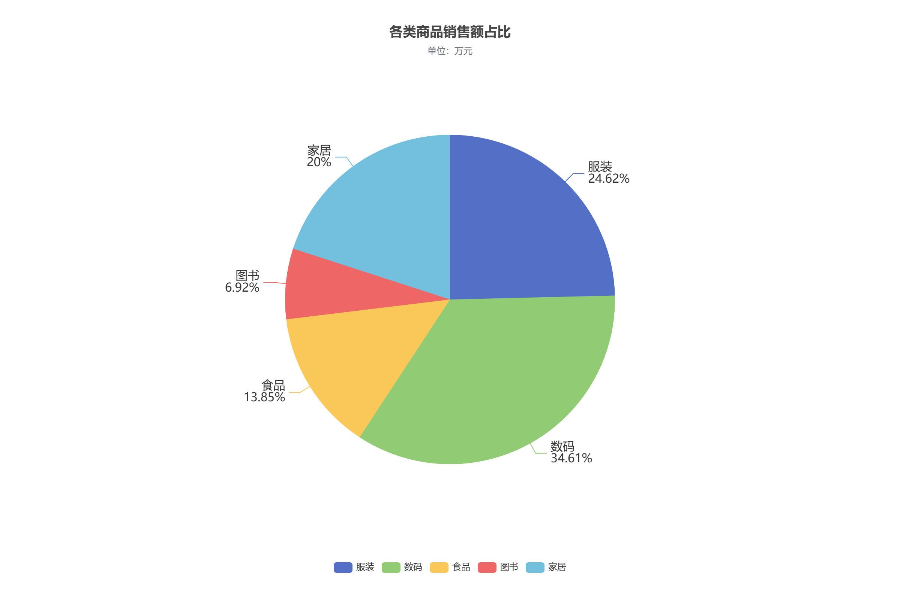

实验目的
掌握饼图初始化、数据对象格式与品类名称显示。
实验数据
| 类别 | 金额 / 万元 |
|---|---|
| 服装 | 320 |
| 数码 | 450 |
| 食品 | 180 |
| 图书 | 90 |
| 家居 | 260 |
实现要点
- 使用 type: pie 绘制饼图，name 与 value 分别保存品类和销售额。
- 标签显示品类和百分比；悬停显示销售额，单位为万元。
运行结果


完整配置
var option = {
title: {
text: '各类商品销售额占比',
subtext: '单位：万元',
left: 'center',
top: 30
},
tooltip: {
trigger: 'item',
formatter: '{b}：{c} 万元（{d}%）'
},
legend: {
orient: 'horizontal',
bottom: 30,
data: ['服装', '数码', '食品', '图书', '家居']
},
series: [{
name: '销售额',
type: 'pie',
radius: '55%',
center: ['50%', '50%'],
data: [
{ value: 320, name: '服装' },
{ value: 450, name: '数码' },
{ value: 180, name: '食品' },
{ value: 90, name: '图书' },
{ value: 260, name: '家居' }
],
label: { show: true, formatter: '{b}\n{d}%', fontSize: 16 },
labelLine: { show: true },
emphasis: {
itemStyle: {
shadowBlur: 10,
shadowOffsetX: 0,
shadowColor: 'rgba(0, 0, 0, 0.5)'
}
}
}]
};
myChart.setOption(option);